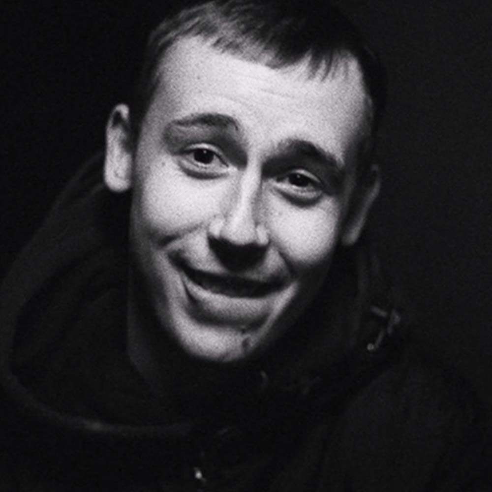

Leh
Michał Leszner
Dyskografia

O artyście
Michał Leszner (ur. 18 sierpnia 1992, zm. 16 lutego 2019) to raper z Gdyni, Chwarzna. Nakładem wytwórni Alkopoligamia ukazał się jego debiutancki album – „Podwórka pytają kiedy płyta”, W 2015 został ósmym Młodym Wilkiem, można go kojarzyć z polskiego hymnu Hip Hop Kemp. Raper z nieskończonym flow nie do zaszufladkowania. Zdecydowanie wyróżniała go błyskotliwość w obserwowaniu rzeczywistości co później ewoluowało w rap który mimo prostych słów wywoływał iście ogromne wrażenie.
Zginął 16 lutego 2019 w wypadku samochodowym w Gdyni.